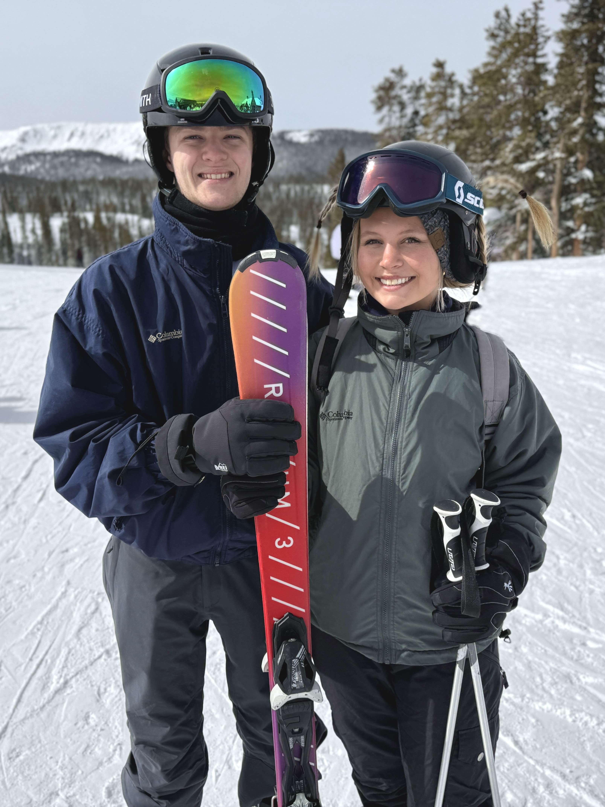
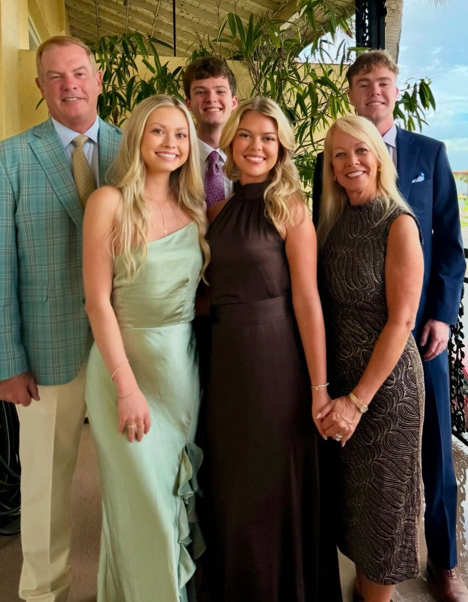
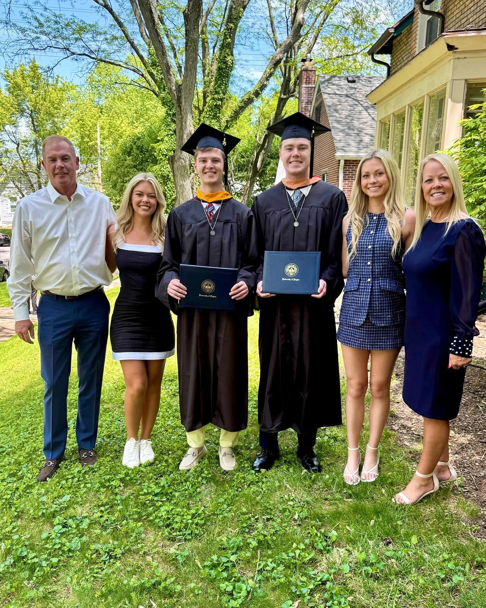
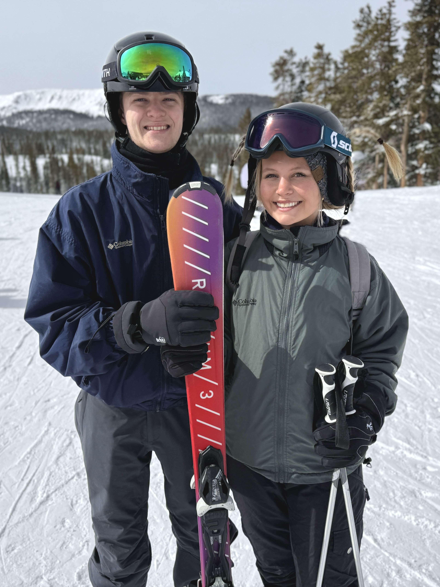
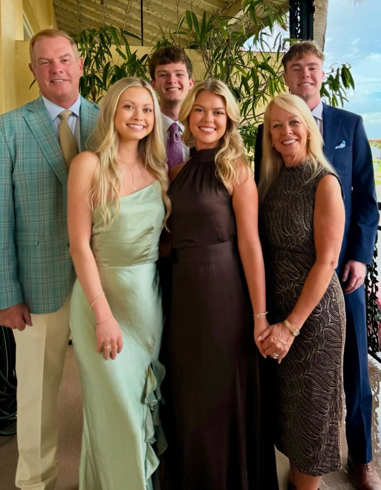
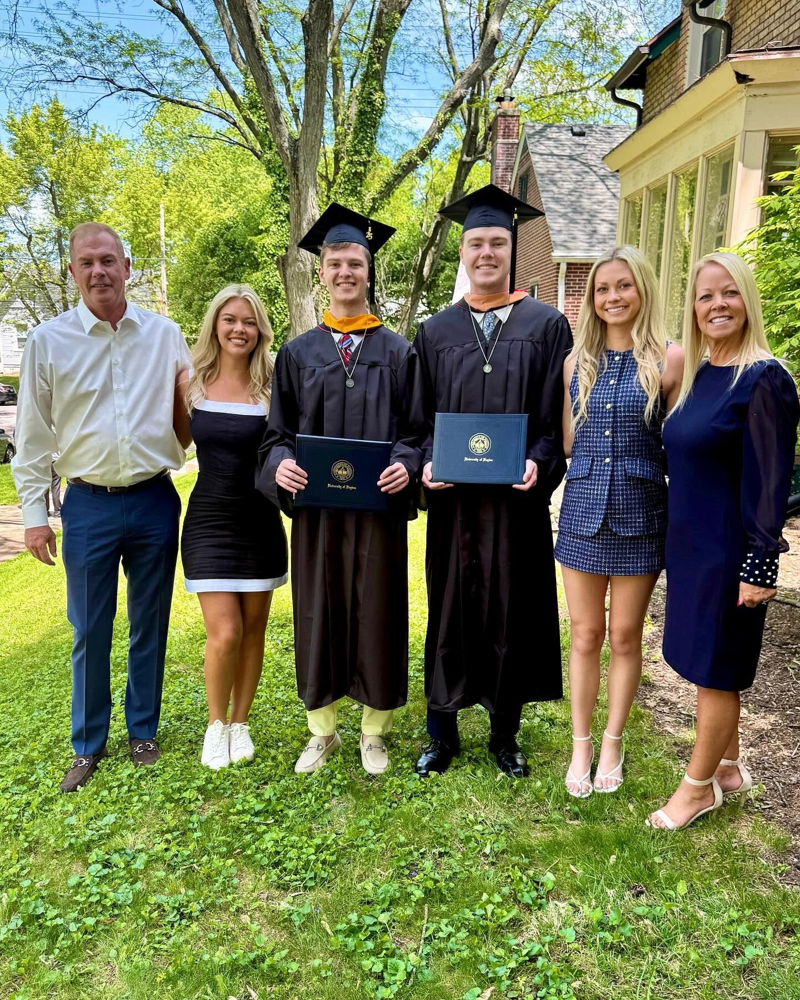

Get to Know Me
This page is all about who I am beyond the resume.

Just a Bit About Me
I'm Brady Koenig, an IT Support Specialist who enjoys solving problems, setting up clean systems, and keeping tech running the way it should. I've got a strong work ethic, a calm approach to troubleshooting, and a genuine interest in anything that helps people work smarter.
Outside of work, I'm into gaming, music production, and messing with side projects that give me new things to learn or build. I like when things just work, and I'm always looking for ways to make that happen, whether it's on a help desk, in code, or in my own space.
Things I’m Into
🏎️ Motorsports
I had the privilege of driving on the Circuit of the Americas track in Austin, TX. I'm big into Formula 1, GT3 racing, and I love watching endurance events like Le Mans.
🎮 Gaming & Dev
I enjoy gaming with friends, especially sim racing. I also like coding my own games and turning creative ideas into playable experiences.
🎵 Music Production
I produce all kinds of music in Ableton Live Suite and built a custom Discord bot to share my tracks. It’s a creative outlet I genuinely enjoy.
🛠️ Side Projects
I spend time building mobile apps, coding websites, and setting up a budget home lab to experiment and learn new skills.
🏌️ Golf
I played varsity golf in high school and competed at the state championship my senior year. I still enjoy getting out on the course.
💻 Tech for Fun
I create tools that solve real problems, like a personal budgeting tracker, a calorie logger, and a mobile app that connects businesses with content creators.
🎿 Trying New Things
I like stepping outside of my comfort zone. Recently I started skiing with my girlfriend, it's a new challenge I'm actually excited to get better at.
🎾 Tennis
I played varsity tennis in high school and continued with club tennis during college. It's a sport I've always loved.
👯♂️ Twin Life
I have a twin brother, which always makes for a good story. People still mix us up sometimes, even with completely different haircuts.
Gallery

 




